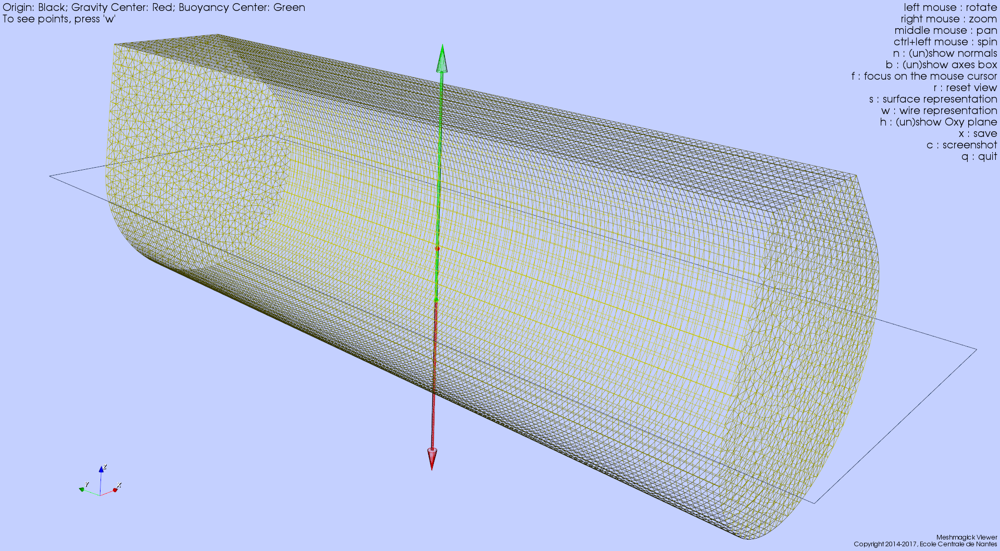
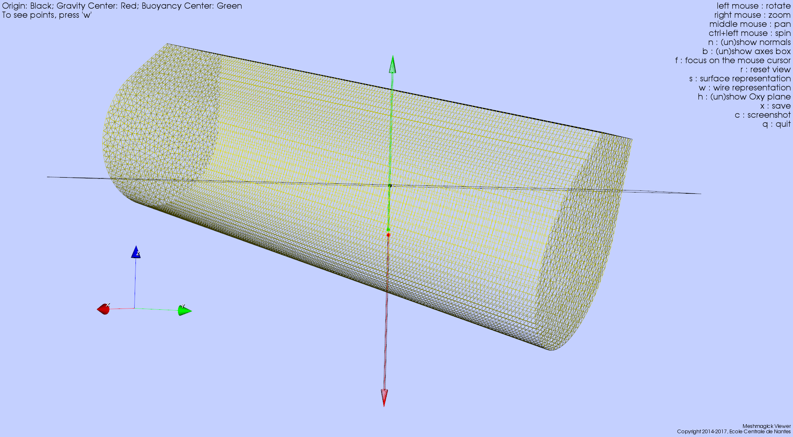
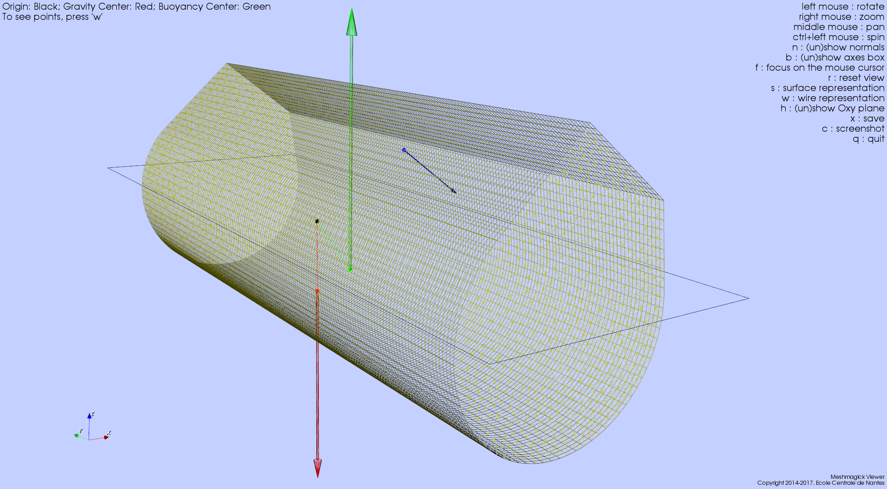

Using Meshmagick¶
Note
- Mesh files examples used through this page are available under the meshmagick/tests/data directory so that you can play with them.
- Images that illustrate the examples have been obtained with the Meshmagick’s viewer and by pressing the
ckeystroke. - Most of the command line options may be combined.
Content
- Getting help
- Converting a mesh file
- Quiet mode
- Getting information on a mesh
- Mesh file visualization
- Mesh healing
- Mesh transformations
- Triangulating quadrangles
- Working with planes
- Getting inertial properties of the mesh
- Performing hydrostatics calculations on the mesh
- Expression of the hydrostatic data
- Getting hydrostatics properties of the mesh
- Displaying the mesh with hydrostatic results
- Getting the mesh vertical position that complies with a given mass displacement
- 3D hydrostatic equilibrium
- Adding external static forces
- Saving the hydrostatic report in a text file
Getting help¶
You can get command line help by issuing the following command:
>$ meshmagick -h
The output of this command is reproduced in the Command Line Interface Reference Guide.
Converting a mesh file¶
Converting a mesh file is one of the most basic usage of Meshmagick:
>$ meshmagick SEAREV.vtp -o SEAREV.mar
The format of the file is generally guessed from the extensions. Sometimes the extension may not be explicit
enough to guess the file format. You should then use the -ifmt (--input-format) and
-ofmt (--output-format) options to explicitly declare the file format:
>$ meshmagick SEAREV.vtp -ifmt paraview SEAREV.vtp -ofmt nemoh SEAREV.dat
This way, we told Meshmagick that SEAREV.dat must be in the Nemoh input mesh file format.
Quiet mode¶
To switch off outputs of Meshmagick, use the -q (--quiet) option:
>$ meshmagick SEAREV.vtp -q
Getting information on a mesh¶
Quick information¶
Quick information on a mesh is given by the -i (--info) option:
>$ meshmagick SEAREV.vtp -i
That gives us the following output:
=============================================
meshmagick - version 1.0
Copyright 2014-2017, Ecole Centrale de Nantes
=============================================
../meshmagick/tests/data/SEAREV.vtp successfully loaded
--------------------------------------------
MESH NAME : SEAREV
--------------------------------------------
Number of vertices: 14354
Number of faces: 15804
Number of triangles: 2904
Number of quadrangles: 12900
xmin = -4.999371 xmax = 4.998167
ymin = -15.000000 ymax = 15.000000
zmin = -5.000000 zmax = 6.000000
=============================================================
meshmagick - version 1.0
Copyright 2014-2017, Ecole Centrale de Nantes
Maintainer : Francois Rongere <Francois.Rongere@ec-nantes.fr>
Good Bye!
=============================================================
Mesh quality metrics¶
You can get some quality metrics on the mesh by issuing:
>$ meshmagick SEAREV.vtp --quality
that gives:
=============================================
meshmagick - version 1.0
Copyright 2014-2017, Ecole Centrale de Nantes
=============================================
../meshmagick/tests/data/SEAREV.vtp successfully loaded
Triangle quality of the mesh (2904 elements):
Area Ratio:
range: 0.0315238 - 0.104016
average: 0.060761 , standard deviation: 0.0129906
Edge Ratio:
range: 1.0115 - 1.68482
average: 1.28402 , standard deviation: 0.135239
Aspect Ratio:
range: 1.00504 - 1.78696
average: 1.17559 , standard deviation: 0.104713
Radius Ratio:
range: 1.0001 - 1.63074
average: 1.06858 , standard deviation: 0.0637777
Frobenius Norm:
range: 1.00009 - 1.4086
average: 1.0574 , standard deviation: 0.0487658
Minimal Angle:
range: 35.6524 - 59.4647
average: 48.5477 , standard deviation: 4.93326
Quadrilateral quality of the mesh (12900 elements):
Area Ratio:
range: 0.0774506 - 0.0812261
average: 0.0797408 , standard deviation: 0.00129459
Edge Ratio:
range: 1.93626 - 2.03065
average: 1.99352 , standard deviation: 0.0323648
Aspect Ratio:
range: 1.46813 - 1.51532
average: 1.49676 , standard deviation: 0.0161824
Radius Ratio:
range: 1.22636 - 1.26155
average: 1.24764 , standard deviation: 0.0120902
Average Frobenius Norm:
range: 1.22636 - 1.26155
average: 1.24764 , standard deviation: 0.0120902
Maximal Frobenius Norm:
range: 1.22636 - 1.26155
average: 1.24764 , standard deviation: 0.0120902
Minimal Angle:
range: 90 - 90
average: 90 , standard deviation: 0
Definition of the different quality measures is given
in the verdict library manual :
http://www.vtk.org/Wiki/images/6/6b/VerdictManual-revA.pdf
=============================================================
meshmagick - version 1.0
Copyright 2014-2017, Ecole Centrale de Nantes
Maintainer : Francois Rongere <Francois.Rongere@ec-nantes.fr>
Good Bye!
=============================================================
Note
This option requires that you have installed a version of the python VTK library as it is used to compute these metrics. It relies on the verdict library, initially developed at Sandia lab and later included into VTK. More information on the metrics can be seen in the Verdict manual.
Mesh file visualization¶
Quickly viewing a mesh can be achieved by using the following command:
>$ meshmagick SEAREV.vtp --show
that opens the internal Meshmagick’s viewer.

Note
The viewer relies on VTK, so the python VTK library must be installed in order to use it.
The viewer is blazing fast and support mesh manipulation with the mouse. Some keyboard keys are available and their usage is indicated in the upper right panel.
Certainly the most useful feature is the visualization of normals by pressing the n keystroke so that you can verify
consistency of normals across the mesh as well as orientation (must generally be outward for computations).

The above screenshot has been obtained by pressing successively the keys n (showing normals), w (wire
representation), h (show Oxy plane i.e. the water free surface) and c (to save a screenshot that is saved
under the name screenshot.png in the current working directory.)
Just play with options to discover what is available !
Note
The frame at the lower left corner is draggable and resizable so that you can inspect your mesh for alignment or whatever you want.
Mesh healing¶
Meshmagick offers some options to deal with mesh description. Sometimes, meshes are produced with duplicated vertices description, making it impossible to establish some advanced connectivities. This is intrinsically the case for e.g. in GDF files, the input mesh file format of Wamit where faces are internally represented by vertices coordinates only, without using a connectivity table.
Sometimes also, faces normals are not consistent. This is often the case by e.g. when using GMSH mesh generator. You may also want to flip every normals.
Removing duplicate vertices¶
The -md (--merge-duplicates) option does this:
>$ meshmagick coque.gdf -md
that gives:
=============================================
meshmagick - version 1.0
Copyright 2014-2017, Ecole Centrale de Nantes
=============================================
../meshmagick/tests/data/coque.gdf successfully loaded
* Merging duplicate vertices that lie in an absolute proximity of 1.0E-08...
--> Initial number of vertices : 15100
--> Final number of vertices : 3911
--> 11189 vertices have been merged
=============================================================
meshmagick - version 1.0
Copyright 2014-2017, Ecole Centrale de Nantes
Maintainer : Francois Rongere <Francois.Rongere@ec-nantes.fr>
Good Bye!
=============================================================
This allows to generate connectivity tables in the mesh and may drastically reduce the mesh size in memory and on disk.
Healing normals¶
This is obtained by using the -hn (--heal-normals) command line option. Let’s have an example. In the
meshmagick/tests/data folder, you can find the file cylinder.geo that is a geometry file using the GMSH
language for modeling geometry. It models the eighth of a cylinder.
If you have GMSH on your computer, you can generate a mesh file from this file by issuing the following command in your terminal:
>$ gmsh -2 cylinder.geo
It will generate a file named cylinder.msh which is a surface mesh of the portion of cylinder. One thing that you
can do is to visualize this mesh with the --show option:
>$ meshmagick cylinder.msh --show
and stroke n to watch normals.

It is clear that GMSH did not orient the normals consistently. Now, you can heal them by issuing by e.g.:
>$ meshmagick cylinder.msh -hn -o cylinder_healed.vtp --show
which heals the normals, opens the Meshmagick’s viewer and writes the healed mesh as a vtp file that can be opened into Paraview.

Note
This option uses a flood fill algorithm to diffuse the normal
orientation information. For doing so, it requires to establish a connectivity map for faces/faces adjacency. For
this map to be realized, it is necessary to merge duplicate nodes before healing normals. When invoking the
-md (--merge-duplicates) and -hn (--heal-normals) options at the same time, merging is done
before healing so it is verified.
Warning
If your mesh is not conformal, this option may fail as the connectivity map used by the flooding algorithm may present some non connected patches of faces that will be flooded independently, making the transit of normal orientation between these patch impossible.
Note
If the mesh is closed and conformal, a side effect of this option is to test if the normals are outgoing and correct them if they are not. This is achieved by “plunging the mesh in water” and integrate the hydrostatics pressure to identify the resultant force orientation which must be along the positive vertical in case the normals are outgoing. If the mesh does not allow this checking, normals are nevertheless made consistent and you are warned about the eventual need to manually watch the normals from the Meshmagick’s viewer and issue a new command to flip the whole normals as described in the following.
Flipping normals¶
This can be done with the -fn (--flip-normals) option. Based on the cylinder.vtp file obtained just
before, if we issue the following command:
>$ meshmagick cylinder.vtp -fn --show
we get:

Global healing¶
When getting a mesh file from somewhere, you could use the -hm (--heal-mesh) option to automatically apply a
set of sanity checks and modifications on the mesh. It successively applies the following operations:
- Removes unused vertices
- Removes degenerated faces
- Merge duplicate vertices
- Heal triangles description
- Heal normal orientations
The command is then:
>$ meshmagick cylinder.msh -hm
that outputs:
=============================================
meshmagick - version 1.0
Copyright 2014-2017, Ecole Centrale de Nantes
=============================================
../meshmagick/tests/data/cylinder.msh successfully loaded
OPERATION: heal the mesh
* Removing unused vertices in the mesh:
--> 1 unused vertices have been removed
* Removing degenerated faces
--> No degenerated faces
* Merging duplicate vertices that lie in an absolute proximity of 1.0E-08...
--> No duplicate vertices have been found
* Ensuring consistent definition of triangles:
--> Triangle description is consistent
Boundary is not closed !!!
Boundary is not closed !!!
Boundary is not closed !!!
Boundary is not closed !!!
Boundary is not closed !!!
Boundary is not closed !!!
Boundary is not closed !!!
Boundary is not closed !!!
Boundary is not closed !!!
Boundary is not closed !!!
Boundary is not closed !!!
Boundary is not closed !!!
Boundary is not closed !!!
Boundary is not closed !!!
Boundary is not closed !!!
Boundary is not closed !!!
Boundary is not closed !!!
Boundary is not closed !!!
Boundary is not closed !!!
Boundary is not closed !!!
Boundary is not closed !!!
Boundary is not closed !!!
Boundary is not closed !!!
Boundary is not closed !!!
Boundary is not closed !!!
Boundary is not closed !!!
Boundary is not closed !!!
* Healing normals to make them consistent and if possible outward
--> 2000 faces have been reversed to make normals consistent across the mesh
--> WARNING: the mesh does not seem watertight althought marked as closed...
Done.
=============================================================
meshmagick - version 1.0
Copyright 2014-2017, Ecole Centrale de Nantes
Maintainer : Francois Rongere <Francois.Rongere@ec-nantes.fr>
Good Bye!
=============================================================
Mesh transformations¶
Some basic mesh transformation options are available: translations, rotations, scaling.
Translations¶
The options to use are -tx (--translatex), -ty (--translatey), -tz (--translatez),
-t (--translate) which respectively performs translations along the x axis, the y axis, the z axis and along a
coordinate vector. The invocations are:
>$ meshmagick SEAREV.vtp -tx 10
>$ meshmagick SEAREV.vtp -ty 10
>$ meshmagick SEAREV.vtp -tz 10
>$ meshmagick SEAREV.vtp -t 10 10 10 -i
for translations of 10 along specific axes and along the coordinate vector (10, 10, 10). The last command gives:
=============================================
meshmagick - version 1.0
Copyright 2014-2017, Ecole Centrale de Nantes
=============================================
../meshmagick/tests/data/SEAREV.vtp successfully loaded
OPERATION: Translation by [10.000000, 10.000000, 10.000000]
-> Done.
--------------------------------------------
MESH NAME : SEAREV
--------------------------------------------
Number of vertices: 14354
Number of faces: 15804
Number of triangles: 2904
Number of quadrangles: 12900
xmin = 5.000629 xmax = 14.998167
ymin = -5.000000 ymax = 25.000000
zmin = 5.000000 zmax = 16.000000
=============================================================
meshmagick - version 1.0
Copyright 2014-2017, Ecole Centrale de Nantes
Maintainer : Francois Rongere <Francois.Rongere@ec-nantes.fr>
Good Bye!
=============================================================
Rotations¶
The options to use are -rx (--rotatex), -ry (--rotatey), -rz (--rotatez),
-r (--rotate) which respectively performs rotations around the x axis, the y axis, the z axis and a 3D
rotation along fixed axis rotation vector. The invocations are:
>$ meshmagick SEAREV.vtp -rx 90
>$ meshmagick SEAREV.vtp -ry 90
>$ meshmagick SEAREV.vtp -rz 90
>$ meshmagick SEAREV.vtp -r 90 90 90 -i
for rotations of 90° around specific axes and around the rotation coordinate vector (90, 90, 90). The last command gives:
=============================================
meshmagick - version 1.0
Copyright 2014-2017, Ecole Centrale de Nantes
=============================================
../meshmagick/tests/data/SEAREV.vtp successfully loaded
OPERATION: Rotation by [90.000000, 90.000000, 90.000000] (degrees)
-> Done.
--------------------------------------------
MESH NAME : SEAREV
--------------------------------------------
Number of vertices: 14354
Number of faces: 15804
Number of triangles: 2904
Number of quadrangles: 12900
xmin = -10.603241 xmax = 12.371918
ymin = -8.932214 ymax = 8.932176
zmin = -16.367325 zmax = 15.536390
=============================================================
meshmagick - version 1.0
Copyright 2014-2017, Ecole Centrale de Nantes
Maintainer : Francois Rongere <Francois.Rongere@ec-nantes.fr>
Good Bye!
=============================================================
Warning
- When using the
-r (--rotate)option, please keep in mind that the angles given are not the Cardan angles (Roll, Pitch, Yaw) but angles around a fixed rotation axis. - Angles must be given in degrees.
Scaling¶
The options to use are -sx (--scalex), -sy (--scaley), -sz (--scalez),
-s (--scale) which respectively performs scaling along the x axis, the y axis, the z axis and a 3D
scaling of the mesh. The invocations are:
>$ meshmagick SEAREV.vtp -sx 2
>$ meshmagick SEAREV.vtp -sy 2
>$ meshmagick SEAREV.vtp -sz 2
>$ meshmagick SEAREV.vtp -s 2 -i
for scaling of 2 along specific axes and of the whole mesh in space. The last command gives:
=============================================
meshmagick - version 1.0
Copyright 2014-2017, Ecole Centrale de Nantes
=============================================
../meshmagick/tests/data/SEAREV.vtp successfully loaded
OPERATION: Scaling by 2.000000
-> Done.
--------------------------------------------
MESH NAME : SEAREV
--------------------------------------------
Number of vertices: 14354
Number of faces: 15804
Number of triangles: 2904
Number of quadrangles: 12900
xmin = -9.998741 xmax = 9.996333
ymin = -30.000000 ymax = 30.000000
zmin = -10.000000 zmax = 12.000000
=============================================================
meshmagick - version 1.0
Copyright 2014-2017, Ecole Centrale de Nantes
Maintainer : Francois Rongere <Francois.Rongere@ec-nantes.fr>
Good Bye!
=============================================================
Warning
Scaling is performed before any translations when both options are used. So the translation magnitudes must be adapted to be consistent with the new scale of the mesh.
Triangulating quadrangles¶
The -tq (--triangulate-quadrangles) allows to split every quadrangle faces in the mesh into two triangle:
>$ meshmagick cylinder.msh -tq --show
that displays the following:
=============================================
meshmagick - version 1.0
Copyright 2014-2017, Ecole Centrale de Nantes
=============================================
../meshmagick/tests/data/cylinder.msh successfully loaded
Triangulating quadrangles
-->3000 quadrangles have been split in triangles
=============================================================
meshmagick - version 1.0
Copyright 2014-2017, Ecole Centrale de Nantes
Maintainer : Francois Rongere <Francois.Rongere@ec-nantes.fr>
Good Bye!
=============================================================

Warning
The splitting procedure is basic and keep in mind that no check is done on the quality of the generated triangles. If your mesh faces does not have a good aspect ratio, it could produce some really tiny triangles.
Working with planes¶
Planes may be used in different situation as seen below. They can be defined so as to perform mesh clipping (useful
to provide the submerged part of the mesh to hydrodynamics BEM software such as Nemoh), symmetrizing (when only a
part of the mesh has been generated as in the cylinder.geo gmsh geometry file example) or mirroring.
A plane is defined by its normal \(\vec{n}\) and a scalar parameter \(c\) following the equation \(\vec{n}.\vec{x} = c\), where \(\vec{x}\) is the coordinate vector of a point belonging to the plane.
The scalar parameter \(c\) is practically the orthogonal distance between the origin of the reference frame and the plane.
Working with planes is quite flexible as you have 3 mean to use them along with plane dependent options:
Defining the plane by 4 scalars: \(n_x, n_y, n_z, c\)
- Using predefined plane keywords:
- Oxy
- Oxz
- Oyz
- /Oxy
- /Oxz
- /Oyz
Using the index of a plane that has been defined with the
-p (--plane)option.
Defining planes¶
A plane may be defined at the command line level along with de -p (--plane) option:
>$ meshmagick SEAREV.vtp -p 0 0 1 0
defines the plane with normal (0, 0, 1) and the scalar parameter 0.
It is also possible to define the same plane by a predefined keyword argument:
>$ meshmagick SEAREV.vtp -p Oxy
Predefined keywords arguments are Oxy, Oxz, Oyz, /Oxy, /Oxz, /Oyz and are self descriptive. The slash indicates that the normals is reversed.
It is possible to define several planes at once such as in:
>$ meshmagick SEAREV.vtp -p Oxy -p /Oxz
When defining planes with the -p (--plane) option, the planes definitions are internally stored in a list in
the order that you used in the command line and it is then possible to refer to them in other options by their index in
the list, starting by 0. So in the above command line, the plane Oxy can be refereed as the plane index 0 and the /Oxz
plane as the plane index 1.
Clipping a mesh by a plane¶
To clip a mesh against a plane, use the -c (--clip) option like in:
>$ meshmagick SEAREV.vtp -c 1 1 1 2 --show
that displays the following view:

As said before, the above command is strictly equivalent to:
>$ meshmagick SEAREV.vtp -p 1 1 1 2 -c 0 --show
It is also possible to use several -c (--clip) option at a time:
>$ meshmagick SEAREV.vtp -c Oxy -c Oyz --show
that gives:

Note
It is possible to invoke the -c (--clip) option without any argument. In that case, a default Oxy plane
is taken.
Note
The part of the mesh that is kept is that opposite to the plane’s normal orientation.
Symmetrizing a mesh about a plane¶
To symmetrize a mesh about a plane, use the --sym (--symmetrize) option. Taking back the cylinder.msh
example generated sooner, we can issue:
>$ meshmagick cylinder.msh --sym Oxy --show
that gives:

Combining the options allow us to close the cylinder:
>$ meshmagick cylinder.msh --sym Oxy --sym Oxz --sym Oyz --show
that gives:

Checking normals gives as expected:

that we can heal:
>$ meshmagick cylinder.msh --sym Oxy --sym Oxz --sym Oyz -hn --show

and clip back:
>$ meshmagick cylinder.msh --sym Oxy --sym Oxz --sym Oyz -hn -c Oxy -c Oyz -c Oxz --show
making us confident with respect to the normal consistency and orientation (outward) of our open part of cylinder mesh:

Note
Faces quality on the vicinity of the clipping plane is not checked. You can then generate faces with very poor aspect ratio. This will be fixed in a future Meshmagick’s release by applying a projection procedure that is nontrivial to develop as it must not modify the geometry locally.
Getting inertial properties of the mesh¶
Meshmagick allows to calculate inertial properties of meshes based on some assumptions on the mass distribution:
- A mesh which is uniformly filled with an homogeneous medium with a given density (the practical interest if for e.g. for ballast modeling).
- A mesh considered as a shell having a constant thickness and made in a medium of a given density (approximation for floating structures).
Todo
Add keywords for available medium...
Warning
Inertial properties are:
- The mass \(m\) (tons)
- The position of the center of gravity in the mesh’s reference frame \(\vec{OG}\)
- The (3x3) symmetric 3D rotational inertia matrix \(\mathbf{I}_O\)
The inertia matrix must be expressed with respect to a reduction point. Internally, inertia calculations are done in the mesh’s reference frame (where vertices coordinates are expressed) so the default inertia matrix is expressed at the mesh’s origin. Please see the
--reduction-pointand--at-cogoptions to specify an other reduction point.Note also that the default unit for mass in Meshmagick is the ton ! This is of practical use in offshore applications.
Note
Pay attention that the inertia products Ixy, Ixz and Iyz have the real significance and they should be used with a minus sign when put in a 3D rotational inertia matrix as in \(\mathbf{I}_O = \begin{bmatrix} I_{xx} & -I_{xy} & -I_{xz} \\ -I_{xy} & I_{yy} & -I_{yz} \\ -I_{xy} & -I_{yz} & I_{zz} \end{bmatrix}\).
Coefficients are given by:
- \(I_{xx} = \iint_{S_w}(y^2+z^2)dS\)
- \(I_{xy} = \iint_{S_w}xydS\)
- \(I_{xz} = \iint_{S_w}xzdS\)
- \(I_{yy} = \iint_{S_w}(x^2+z^2)dS\)
- \(I_{yz} = \iint_{S_w}yzdS\)
- \(I_{zz} = \iint_{S_w}(x^2+y^2)dS\)
Defining the medium density¶
The medium density, for both assumptions on mass distribution in the mesh, is done by using the --rho-medium
option:
>$ meshmagick SEAREV.vtp --rho-medium 1023
Note
Density must be given in kg/m**3 unit.
Note
In the above command line, we specified a meshfile as an option although we have no mesh processing at all, the
aim being to get the list of available medium. This is a limitation of the argparse Python module that is
used in Meshmagick to parse command line options and arguments. This module does not allow to define optional
arguments that overhelms the mandatoriness of the positional arguments. Except for the --help command line
option, you always have to specify a mesh file while calling Meshmagick.
It is also possible to use some default medium density keywords. These keywords can be retrieved using the
--list-medium option:
>$ meshmagick SEAREV.vtp --list-medium
=============================================
meshmagick - version 1.0
Copyright 2014-2017, Ecole Centrale de Nantes
=============================================
../meshmagick/tests/data/SEAREV.vtp successfully loaded
+----------------------+----------------------+
|NAME | DENSITY (KG/M**3)|
+----------------------+----------------------+
|STEEL | 7850.000|
+----------------------+----------------------+
|NITROGEN_-195DEGC | 810.000|
+----------------------+----------------------+
|LEAD | 11350.000|
+----------------------+----------------------+
|ALUMINUM | 2700.000|
+----------------------+----------------------+
|TITANIUM | 4500.000|
+----------------------+----------------------+
|PROPANE | 2.010|
+----------------------+----------------------+
|REINFORCED_CONCRETE | 2400.000|
+----------------------+----------------------+
|POLYSTYRENE | 1050.000|
+----------------------+----------------------+
|GASOLINE | 750.000|
+----------------------+----------------------+
|FRESH_WATER | 1000.000|
+----------------------+----------------------+
|CONCRETE | 2300.000|
+----------------------+----------------------+
|SAND | 1600.000|
+----------------------+----------------------+
|AIR_20DEGC | 1.204|
+----------------------+----------------------+
|HYDROGEN_-252DEGC | 70.000|
+----------------------+----------------------+
|ETHANOL | 789.000|
+----------------------+----------------------+
|BUTANE | 2.700|
+----------------------+----------------------+
|SALT_WATER | 1025.000|
+----------------------+----------------------+
|DIESEL_FUEL | 850.000|
+----------------------+----------------------+
=============================================================
meshmagick - version 1.0
Copyright 2014-2017, Ecole Centrale de Nantes
Maintainer : Francois Rongere <Francois.Rongere@ec-nantes.fr>
Good Bye!
=============================================================
An other solution is to look at the --help output.
Todo
- Faire que argparse émette un warning si on a des options non reconnues.
- Ajouter la possibilité d’exprimer les matrices résultat en un point de réduction particulier. Cette option qu’on nomera –reduction-point (-rp) sera utilisee a la fois par les inerties et par la matrice raideur
- On mettra aussi en place une option –at-cog pour que le poitn de reduction soit specifie au cetre de gravite
Guessing the mesh is filled with homogeneous medium¶
This is achieved by using the -pi (--plain-inertia) option:
>$ meshmagick SEAREV.vtp -pi --rho-medium 800
that gives:
=============================================
meshmagick - version 1.0
Copyright 2014-2017, Ecole Centrale de Nantes
=============================================
../meshmagick/tests/data/SEAREV.vtp successfully loaded
Inertial parameters for a uniform distribution of a medium of density 800.0 kg/m**3 in the mesh:
Mass = 2117.400 tons
COG (m):
xg = -0.207
yg = -0.000
zg = 0.547
Inertia matrix (SI):
1.764E+08 -1.455E-09 1.986E+06
-1.455E-09 3.110E+07 -0.000E+00
1.986E+06 -0.000E+00 1.723E+08
Expressed at point : 0.000E+00 0.000E+00 0.000E+00
=============================================================
meshmagick - version 1.0
Copyright 2014-2017, Ecole Centrale de Nantes
Maintainer : Francois Rongere <Francois.Rongere@ec-nantes.fr>
Good Bye!
=============================================================
Note
If the medium’s density is not specified, the -pi option guesses that the medium is salt water and then takes a
default density of 1023 kg/m**3.
Guessing the mesh is a shell¶
This is achieved by using the -si (--shell-inertia) option:
>$ meshmagick SEAREV.vtp -si --rho-medium 5850 --thickness 0.02
that gives:
=============================================
meshmagick - version 1.0
Copyright 2014-2017, Ecole Centrale de Nantes
=============================================
../meshmagick/tests/data/SEAREV.vtp successfully loaded
Inertial parameters for a shell distribution of a medium of density 5850.0 kg/m**3 and a thickness of 0.020 m over the mesh:
Mass = 140.997 tons
COG (m):
xg = -0.002
yg = 0.000
zg = 0.006
Inertia matrix (SI):
1.578E+07 -1.375E+01 2.205E+05
-1.375E+01 3.799E+06 -6.452E+00
2.205E+05 -6.452E+00 1.536E+07
Expressed at point : 0.000E+00 0.000E+00 0.000E+00
=============================================================
meshmagick - version 1.0
Copyright 2014-2017, Ecole Centrale de Nantes
Maintainer : Francois Rongere <Francois.Rongere@ec-nantes.fr>
Good Bye!
=============================================================
Note
- If the
--rho-mediumoption is not specified, the medium density is by default considered that of steel (5850 kg/m**3) - If the
--thicknessoption is not specified, the thickness of the shell is by default considered being 0.02 meters.
Performing hydrostatics calculations on the mesh¶
Meshmagick allows to perform some hydrostatics computations on meshes. You can get the current hydrostatics properties of the mesh such as the hydrostatic stiffness matrix, metacentric heights, floating plane area...
It is also able to compute the hydrostatic equilibrium of the mesh with respect to a given floater mass and/or a given position of the center of gravity as well as additional external forces.
Expression of the hydrostatic data¶
The hydrostatic stiffness matrix coefficients only depend on the geometry of the flotation plane that is the polygon (s) generated by the intersection of the body with the horizontal plane Oxy. The matrix writes:
This matrix is symmetric so that we have \(K_{43}=K_{34}\), \(K_{53}=K_{35}\) and \(K_{54}=K_{45}\) and we will only present 6 coefficients in the hydrostatic reports.
The expression of the hydrostatic coefficients is:
where \(\nabla\) is the volume displacement of the body, \(R_t\) and \(R_l\) are respectively the transversal and longitudinal metacentric radius, \(GM_t\) and \(GM_l\) are respectively the transversal and longitudinal metacentric heights, \(x_f\) and \(y_f\) are the horizontal position of the center of the flotation plane.
Getting hydrostatics properties of the mesh¶
To get an hydrostatic report on the current configuration of the mesh, you may use the -hs option:
>$ meshmagick SEAREV.vtp -hs
that gives:
=============================================
meshmagick - version 1.0
Copyright 2014-2017, Ecole Centrale de Nantes
=============================================
../meshmagick/tests/data/SEAREV.vtp successfully loaded
Generating hydrostatic data for a zcog of 0.000 meters.
GRAVITY ACCELERATION (M/S**2)-----------> 9.81
DENSITY OF WATER (KG/M**3)--------------> 1023.0
WATERPLANE AREA (M**2)------------------> 299.8
WATERPLANE CENTER (M)-------------------> -0.001 -0.000
WET AREA (M**2)-------------------------> 549.6
DISPLACEMENT VOLUME (M**3)--------------> 1176.831
DISPLACEMENT MASS (TONS)----------------> 1203.898
BUOYANCY CENTER (M)---------------------> -0.000 0.000 -2.121
CENTER OF GRAVITY (M)-------------------> 0.000 0.000 0.000
DRAUGHT (M)-----------------------------> 5.000
LENGTH OVERALL SUBMERGED (M)------------> 10.00
BREADTH OVERALL SUBMERGED (M)-----------> 30.00
LENGTH AT WATERLINE LWL (M)-------------> 9.99
FORWARD PERPENDICULAR (M)---------------> 5.00
TRANSVERSAL METACENTRIC RADIUS (M)------> 19.107
TRANSVERSAL METACENTRIC HEIGHT GMT (M)--> 16.986
LONGITUDINAL METACENTRIC RADIUS (M)-----> 2.120
LONGITUDINAL METACENTRIC HEIGHT GML (M)-> -0.001
HYDROSTATIC STIFFNESS COEFFICIENTS:
K33 (N/M)-------------------------------> 3.0088E+06
K34 (N)---------------------------------> 0.0000E+00
K35 (N)---------------------------------> 1.7289E+03
K44 (N.M)-------------------------------> 2.0061E+08
K45 (N.M)-------------------------------> 0.0000E+00
K55 (N.M)-------------------------------> -6.1076E+03
INERTIAS:
IXX-------------------------------------> 9.239E+07
IXY-------------------------------------> 0.000E+00
IXZ-------------------------------------> 9.572E+01
IYY-------------------------------------> 9.617E+06
IYZ-------------------------------------> 9.304E-10
IZZ-------------------------------------> 9.781E+07
RESIDUALS:
ABSOLUTE--------------------------------> 1.863E-09 0.000E+00 6.889E+02
RELATIVE--------------------------------> 1.577E-16 0.000E+00 5.837E-06
RELATIVE TOLERANCE----------------------> 1.0E-02
=============================================================
meshmagick - version 1.0
Copyright 2014-2017, Ecole Centrale de Nantes
Maintainer : Francois Rongere <Francois.Rongere@ec-nantes.fr>
Good Bye!
=============================================================
When using this option alone (without giving a mass or center of gravity), the system considers that the current displacement correspond to the mass of the body. However, the vertical position of the center of gravity used in the computation of the K44 and K55 stiffness coefficients is considered to be 0 as specified at the beginning of the report. You may also want to specify this vertical position by using the –zcog option, by eg.:
>$ meshmagick SEAREV.vtp -hs --zcog 2
that gives the following report:
=============================================
meshmagick - version 1.0
Copyright 2014-2017, Ecole Centrale de Nantes
=============================================
../meshmagick/tests/data/SEAREV.vtp successfully loaded
Generating hydrostatic data for a zcog of 2.000 meters.
GRAVITY ACCELERATION (M/S**2)-----------> 9.81
DENSITY OF WATER (KG/M**3)--------------> 1023.0
WATERPLANE AREA (M**2)------------------> 299.8
WATERPLANE CENTER (M)-------------------> -0.001 -0.000
WET AREA (M**2)-------------------------> 549.6
DISPLACEMENT VOLUME (M**3)--------------> 1176.831
DISPLACEMENT MASS (TONS)----------------> 1203.898
BUOYANCY CENTER (M)---------------------> -0.000 0.000 -2.121
CENTER OF GRAVITY (M)-------------------> 0.000 0.000 2.000
DRAUGHT (M)-----------------------------> 5.000
LENGTH OVERALL SUBMERGED (M)------------> 10.00
BREADTH OVERALL SUBMERGED (M)-----------> 30.00
LENGTH AT WATERLINE LWL (M)-------------> 9.99
FORWARD PERPENDICULAR (M)---------------> 5.00
TRANSVERSAL METACENTRIC RADIUS (M)------> 19.107
TRANSVERSAL METACENTRIC HEIGHT GMT (M)--> 14.986
LONGITUDINAL METACENTRIC RADIUS (M)-----> 2.120
LONGITUDINAL METACENTRIC HEIGHT GML (M)-> -2.001
HYDROSTATIC STIFFNESS COEFFICIENTS:
K33 (N/M)-------------------------------> 3.0088E+06
K34 (N)---------------------------------> 0.0000E+00
K35 (N)---------------------------------> 1.7289E+03
K44 (N.M)-------------------------------> 1.7699E+08
K45 (N.M)-------------------------------> 0.0000E+00
K55 (N.M)-------------------------------> -2.3627E+07
INERTIAS:
IXX-------------------------------------> 9.239E+07
IXY-------------------------------------> 0.000E+00
IXZ-------------------------------------> 9.572E+01
IYY-------------------------------------> 9.617E+06
IYZ-------------------------------------> 9.304E-10
IZZ-------------------------------------> 9.781E+07
RESIDUALS:
ABSOLUTE--------------------------------> 1.863E-09 0.000E+00 6.889E+02
RELATIVE--------------------------------> 1.577E-16 0.000E+00 5.837E-06
RELATIVE TOLERANCE----------------------> 1.0E-02
=============================================================
meshmagick - version 1.0
Copyright 2014-2017, Ecole Centrale de Nantes
Maintainer : Francois Rongere <Francois.Rongere@ec-nantes.fr>
Good Bye!
=============================================================
In our case, taking a center of gravity so high results in an unstable configuration as you can see in the report, as the longitudinal metacentric height (GML) is negative.
Note
Among the results, you will find the inertia coefficients of the immersed part of the body. The assumptions done here are that the body is filled with water. Pay attention that the inertia products Ixy, Ixz and Iyz have the real significance and they should be used with a minus sign when put in a 3D rotational inertia matrix as in \(\mathbf{I}_O = \begin{bmatrix} I_{xx} & -I_{xy} & -I_{xz} \\ -I_{xy} & I_{yy} & -I_{yz} \\ -I_{xy} & -I_{yz} & I_{zz} \end{bmatrix}\).
Coefficients are given by:
- \(I_{xx} = \iint_{S_w}(y^2+z^2)dS\)
- \(I_{xy} = \iint_{S_w}xydS\)
- \(I_{xz} = \iint_{S_w}xzdS\)
- \(I_{yy} = \iint_{S_w}(x^2+z^2)dS\)
- \(I_{yz} = \iint_{S_w}yzdS\)
- \(I_{zz} = \iint_{S_w}(x^2+y^2)dS\)
Note
You can easily change the default density of water as well as gravity by using the --rho-water and
--grav options.
Displaying the mesh with hydrostatic results¶
As usual, you can combine the command line options with the --show option to display the mesh in the meshmagick
viewer. In hydrostatics mode, it will also show forces applying on the body:
>$ meshmagick SEAREV.vtp -hs --show
will show the following:
In the viewer, we have pressed the w key to get a wireframe representation and see the application points. We can
see that the buoyancy center and the gravity center of the current configuration have nearly the same horizontal
position.
Getting the mesh vertical position that complies with a given mass displacement¶
In that mode, the mesh is displaced so that its mas displacement becomes equal to a specified mass. This is achieved by:
>$ meshmagick SEAREV.vtp -hs --disp 1500
which gives:
=============================================
meshmagick - version 1.0
Copyright 2014-2017, Ecole Centrale de Nantes
=============================================
../meshmagick/tests/data/SEAREV.vtp successfully loaded
Setting mesh displacement to 1500.000 tons
Complying with a displacement of 1500.000 tons
----------------------------------------------
-> Convergence obtained after 10 iterations
GRAVITY ACCELERATION (M/S**2)-----------> 9.81
DENSITY OF WATER (KG/M**3)--------------> 1023.0
WATERPLANE AREA (M**2)------------------> 294.2
WATERPLANE CENTER (M)-------------------> -0.002 -0.000
WET AREA (M**2)-------------------------> 627.5
DISPLACEMENT VOLUME (M**3)--------------> 1466.249
DISPLACEMENT MASS (TONS)----------------> 1499.972
BUOYANCY CENTER (M)---------------------> -0.000 0.000 -2.578
CENTER OF GRAVITY (M)-------------------> 0.000 0.000 -0.971
DRAUGHT (M)-----------------------------> 5.971
LENGTH OVERALL SUBMERGED (M)------------> 10.00
BREADTH OVERALL SUBMERGED (M)-----------> 30.00
LENGTH AT WATERLINE LWL (M)-------------> 9.81
FORWARD PERPENDICULAR (M)---------------> 4.90
TRANSVERSAL METACENTRIC RADIUS (M)------> 15.050
TRANSVERSAL METACENTRIC HEIGHT GMT (M)--> 13.443
LONGITUDINAL METACENTRIC RADIUS (M)-----> 1.608
LONGITUDINAL METACENTRIC HEIGHT GML (M)-> 0.002
HYDROSTATIC STIFFNESS COEFFICIENTS:
K33 (N/M)-------------------------------> 2.9527E+06
K34 (N)---------------------------------> 0.0000E+00
K35 (N)---------------------------------> 6.4136E+03
K44 (N.M)-------------------------------> 1.9781E+08
K45 (N.M)-------------------------------> 0.0000E+00
K55 (N.M)-------------------------------> 2.4450E+04
INERTIAS:
IXX-------------------------------------> 1.162E+08
IXY-------------------------------------> 4.072E-10
IXZ-------------------------------------> -1.132E+02
IYY-------------------------------------> 1.369E+07
IYZ-------------------------------------> 2.942E-09
IZZ-------------------------------------> 1.224E+08
RESIDUALS:
ABSOLUTE--------------------------------> -2.716E+02 1.398E-08 1.767E+03
RELATIVE--------------------------------> -1.846E-05 3.166E-17 1.225E-05
RELATIVE TOLERANCE----------------------> 1.0E-02
=============================================================
meshmagick - version 1.0
Copyright 2014-2017, Ecole Centrale de Nantes
Maintainer : Francois Rongere <Francois.Rongere@ec-nantes.fr>
Good Bye!
=============================================================
This mode is active as long as you don’t use the --cog option that trig the 3D equilibrium searching algorithm
that is presented in the following.
Warning
The mass has to be given in tons as it is more representative of the order of magnitude of usual masses in offshore.
3D hydrostatic equilibrium¶
This mode is active as long as you use the --cog option such that:
>$ meshmagick SEAREV.vtp -hs --cog 0 4 -2 --show
That command outputs the following report:
../meshmagick/meshmagick.py:1199: UserWarning:
WARNING !! : Keep in mind that the mesh may have a new orientation in the Oxy plane so the hydrostatic
stiffness matrix may be impractical as not expressed in a convenient axis system. Use the result
with caution and have a look at the mesh by using the --show option.
This should be fixed in a future release.
warn(msg)
=============================================
meshmagick - version 1.0
Copyright 2014-2017, Ecole Centrale de Nantes
=============================================
../meshmagick/tests/data/SEAREV.vtp successfully loaded
Setting mesh position so that we are at the current displacement of 1203.898 tons and in a stable
configuration with a gravity center located at [0.000, 4.000, -2.000] meters.
Computing equilibrium from initial condition.
----------------------------------------------
Stable equilibrium reached after 6 iterations and 0 random restart
GRAVITY ACCELERATION (M/S**2)-----------> 9.81
DENSITY OF WATER (KG/M**3)--------------> 1023.0
WATERPLANE AREA (M**2)------------------> 286.6
WATERPLANE CENTER (M)-------------------> -0.036 0.105
WET AREA (M**2)-------------------------> 549.1
DISPLACEMENT VOLUME (M**3)--------------> 1177.038
DISPLACEMENT MASS (TONS)----------------> 1204.110
BUOYANCY CENTER (M)---------------------> -0.001 -0.037 -2.484
CENTER OF GRAVITY (M)-------------------> 0.000 0.000 -2.784
DRAUGHT (M)-----------------------------> 8.006
LENGTH OVERALL SUBMERGED (M)------------> 10.00
BREADTH OVERALL SUBMERGED (M)-----------> 31.14
LENGTH AT WATERLINE LWL (M)-------------> 10.00
FORWARD PERPENDICULAR (M)---------------> 5.00
TRANSVERSAL METACENTRIC RADIUS (M)------> 18.027
TRANSVERSAL METACENTRIC HEIGHT GMT (M)--> 18.327
LONGITUDINAL METACENTRIC RADIUS (M)-----> 1.794
LONGITUDINAL METACENTRIC HEIGHT GML (M)-> 2.094
HYDROSTATIC STIFFNESS COEFFICIENTS:
K33 (N/M)-------------------------------> 2.8759E+06
K34 (N)---------------------------------> 3.0168E+05
K35 (N)---------------------------------> 1.0349E+05
K44 (N.M)-------------------------------> 2.1649E+08
K45 (N.M)-------------------------------> 1.3589E+06
K55 (N.M)-------------------------------> 2.4733E+07
INERTIAS:
IXX-------------------------------------> 7.609E+07
IXY-------------------------------------> -7.944E+04
IXZ-------------------------------------> -9.932E+03
IYY-------------------------------------> 1.118E+07
IYZ-------------------------------------> -6.477E+06
IZZ-------------------------------------> 7.998E+07
RESIDUALS:
ABSOLUTE--------------------------------> 2.072E+03-4.354E+05 9.319E+03
RELATIVE--------------------------------> 1.755E-04-1.202E-03 7.892E-05
RELATIVE TOLERANCE----------------------> 1.0E-02
=============================================================
meshmagick - version 1.0
Copyright 2014-2017, Ecole Centrale de Nantes
Maintainer : Francois Rongere <Francois.Rongere@ec-nantes.fr>
Good Bye!
=============================================================
and displays the following viewer:
Note
The solver in charge of the hydrostatic equilibrium computation is iterative. It uses the hydrostatic stiffness matrix and the residual force to compute corrections in position and attitude of the floater (it solves a linear system at each iteration). Since we use here a linearized approximation that is only valid for tiny displacements and rotations, if the proposed correction is greater than some threshold, the correction is relaxed in magnitude. The solver is then a Newton type solver.
Sometimes, the solver could not converge to an equilibrium position (stable or not). This is detected by applying a maximum of iteration number. If that number is reached without any convergence then the floater is rotated with random angles to generate a new initial configuration for iterations (it is called here a restart). A maximum number of restart is allowed. This method makes the solver very robust with respect to the initial configuration given and it is possible to specify some position of the center of gravity that makes the floater capsize.
Warning
- Pay attention that when 3D hydrostatic equilibrium is performed, rotations around x and y as well as translation along z are applied iteratively in order to minimize the residual force with respect to a relative tolerance based on mesh principal dimensions. During iterations, you may have a drift of the orientation of the mesh around the z axis. Although the hydrostatic stiffness coefficient are correctly computed, this unpredictable orientation result in an impractical stiffness matrix as it is then not expressed in a convenient axis system. This should be fixed in a later release of meshmagick. Please use the meshmagick viewer to see what is going on.
- In order to perform 3D hydrostatic equilibrium searching possible, it is mandatory to use a watertight mesh so that the boundary intersection polygons are closed.
Adding external static forces¶
Beside the default gravity and buoyancy forces used in hydrostatic equilibrium, it is possible to add some external forces to the floater. This may be by e.g. the force applied by the wind on the rotor of a floating wind turbine or anchor forces.
Two modes are available: relative or absolute force. In both mode, the force application point follows naturally the body during its position modifications. In relative mode, the direction of the force follows the body. This is generally the case for the preceding wind turbine application example. In the absolute mode the direction of the force remains fixed with respect to the absolute frame. This is the case of mooring forces.
Note
Note that for these options to be used, you always need to specify a center of gravity position along with the
--cog option.
Absolute forces¶
This is achieved using the :-af (--absolute-force) option. By example, applying a vertical mooring load of
200 tons at one side of the SEAREV is obtained by issuing:
>$ meshmagick SEAREV.vtp -hs -af 0 15 -5 0 0 -2000000 --cog 0 0 -2 --show
Note that the parameters of the options are first the 3 coordinates of the application point then the 3 components of the force vector.
As the --show option has been used, the command displays the following viewer:

where you can observe that the force represented in blue has the right vertical orientation and made the SEAREV roll.
Relative forces¶
This is achieved using the -af (--absolute-force) option. By example, applying a vertical mooring load of
200 tons at one side of the SEAREV is obtained by issuing:
>$ meshmagick SEAREV.vtp -hs --cog 0 0 -3 -rf 0 0 5 5000000 0 0 --show
which displays the following viewer:
where you can observe that the force represented in blue has followed the pitch of the body.
Saving the hydrostatic report in a text file¶
Use the --hs-report option followed by the name of the file:
>$ meshmagick SEAREV.vtp -hs --hs-report report.txt